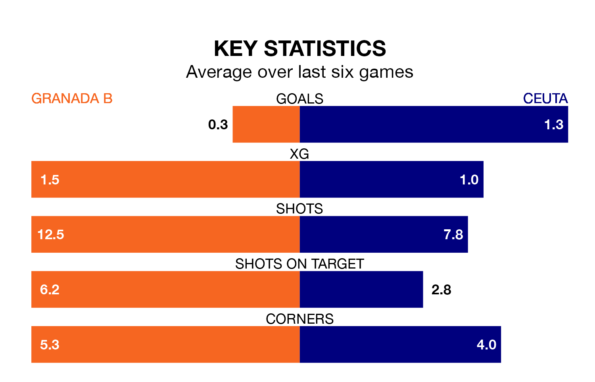

Granada B are on a terrible run ahead of hosting Ceuta at the Estadio Miguel Prieto Garcia on Sunday, with just one point collected from their last six games.
Granada B have picked up just one draw in their last six Primera Division RFEF Group 2 games, and face a Ceuta side whose last six games have brought two wins and two draws.
Granada B are bottom of the table after 26 games, of which they have won two and drawn six, earning 12 points.
Ceuta are 12 places ahead of the hosts in eighth, with nine wins and 10 draws putting them on 37 points.
With 14 goals in 26 games so far this season, Granada B are the league's second-lowest scorers with 0.5 goals per game. And they are conceding more than average, letting in 41 goals at a rate of 1.6 per game.
The away team, meanwhile, are above average scorers, with 1.2 goals per game, compared to a league average of 1.1. They have conceded 1.1 goals per game.
In Pedro López Galisteo, Ceuta can rely on one of the league's safest pair of hands. He has kept nine clean sheets in his 23 appearances this season in Primera Division RFEF Group 2.
In Granada B's net, Adri López has two clean sheets in 10 games. He has conceded a goal every 60 minutes, 70% more often than the 104 minutes between goals for López Galisteo.
Granada B's last match was on March 2, a 1-1 draw against Algeciras CF.
Ceuta beat Intercity 2-1 last time out, on Sunday, with Alejandro Meléndez Ruiz and Emmanuel González Rodríguez on the scoresheet.
Updated: 09:34 (UTC), 08/03/24